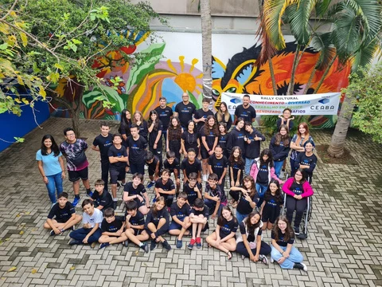

Rally Cultural
Uma corrida do conhecimento que integra disciplinas, criatividade e trabalho em equipe.
Uma etapa de novas perguntas, escolhas e possibilidades. Aprendizagem ativa e projetos interdisciplinares ampliam o olhar sobre o mundo.
Agendar uma visita
Com uma abordagem sociointeracionista, os estudantes conectam diferentes áreas do conhecimento e desenvolvem competências para uma participação consciente na sociedade. Professores especialistas acompanham o percurso acadêmico e socioemocional.
Uma corrida do conhecimento que integra disciplinas, criatividade e trabalho em equipe.
Pesquisa, experimentos e descobertas colocam a curiosidade em movimento e aproximam a ciência do cotidiano.
Paródias e apresentações musicais unem criatividade e consciência ambiental em um encontro com a comunidade escolar.
Os conhecimentos de educação financeira ganham uma aplicação prática, com protagonismo, inovação e responsabilidade.
Textos originais dos estudantes se transformam em um livro que registra ideias, sentimentos e aprendizados.
Diferentes modalidades esportivas fortalecem amizade, espírito esportivo e superação de desafios.
LIV, Programa Bilíngue Eduall, Sistema Bernoulli e preparação para olimpíadas compõem o percurso apresentado pela escola.
Provas, projetos, atividades e simulados acompanham a aprendizagem ao longo de cada bimestre.
Converse com a equipe sobre a rotina, as turmas e as experiências que fazem parte do dia a dia.
Horários apresentados no material pedagógico. Confirme com a equipe as turmas e a disponibilidade para o próximo período letivo.
Agende uma visita pelo WhatsApp. Nossa equipe poderá conversar sobre a proposta pedagógica e combinar um horário para receber sua família.
A aprendizagem é construída por meio das interações, das experiências e da participação ativa dos estudantes. O professor faz a mediação, reconhecendo o repertório e o desenvolvimento de cada aluno.
Venha conhecer nossa proposta, conversar com a equipe e sentir de perto o que faz parte do dia a dia CEABA.